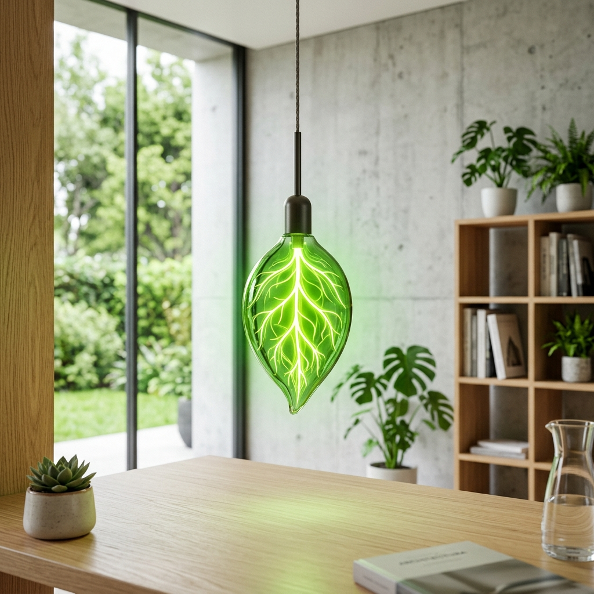

Laporan Utama
Riset & Energetika
Mengapa Menghemat Listrik Rumah Tangga Adalah Kunci Utama Menyelamatkan Suhu Bumi?
Konsumsi energi bahan bakar fosil di sektor pemukiman menyumbang lebih dari 40% emisi karbon perkotaan. Pelajari bagaimana aksi kecil di rumah membawa dampak langsung terhadap pemulihan ekosistem.

Publikasi Terkini
Lihat Semua Artikel
Artikel & Panduan Populer
Infografis Interaktif
Simulasikan Napas Bumi Anda
Sebagai bagian dari media pembelajaran interaktif, instrumen ini mensimulasikan bagaimana tingkat efisiensi energi harian Anda secara langsung memengaruhi kondisi pemulihan lapisan atmosfer bumi.
Indikator Napas Bumi
Geser slider untuk mensimulasikan dampak kebiasaan hemat energi Anda.
Napas Bumi: SEHAT